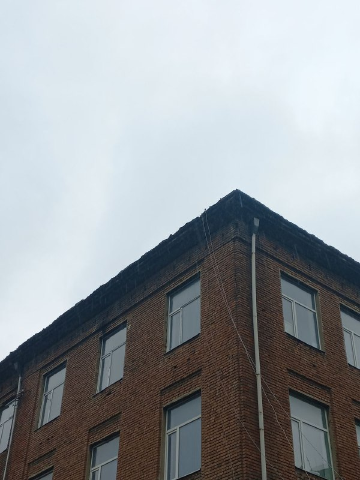

~header
SIT: P-001-LC (Школа) (NI)

Связанные объекты: Маркер.**
Объект SIT: P-001-LC представляет собой пятиэтажное здание, построенное из красного кирпича. Оно было построено приблизительно в 1980-1990 годах и находится [АДРЕС СКРЫТ]. На картах и в документах нет информации об этом здании. При взгляде снаружи видно, что в окнах находятся парты, доски и комнатные растения. Длина здания составляет 72.4 м, ширина - 15.7 м. Вход в здание находится с южной стороны и представляет собой серую подъездную дверь с кодовым замком, которая всегда открыта. Внутрь здания невозможно зайти из-за его аномальных свойств.
**
При прибытии сотрудников SIT, здание было окружено металлическим забором, окрашенным в красный цвет, похожим на цвет кирпичей. Забор позже был снесен и заменен новым, более надежным. Вокруг здания есть газон. Входная дверь находится на двухступенчатой площадке под козырьком. На территории здания находится несколько деревьев высотой в среднем 8-12 метров. Через открытую входную дверь виден длинный коридор с множеством ответвлений, конец которого не видно. Предполагается, что эти ответвления соответствуют комнатам, которые видны снаружи здания. Лестницы на верхние этажи не наблюдаются.
**
Известно, что при входе человека или другого живого объекта в здание через окно или главный вход у них ломаются ноги, что лишает возможности передвигаться по зданию. Если в течение 5-7 минут не покинуть здание, то произойдет яркая вспышка света с тихим хлопком, после чего субъект исчезает. С объектом было проведено два теста, в первом из которых добровольцем стал участник теракта [ИМЯ СКРЫТО], после которого стало известно, что несмотря на защиту ног и то, что доброволец не касался ногами пола напрямую, он все равно получил 2 перелома на левой ноге и один на правой. К сожалению, запись первого теста исчезла вместе с записями тестов SIT: H-001.02-BF, поэтому ее невозможно предоставить.**
Тест №2:
///
Сотрудник SIT A: Готов запустить дрон в здание.
Сотрудник SIT B: Фиксирую видео с камеры дрона.
Сотрудник SIT A: Влетаю в главный вход здания.
Сотрудник SIT B: Вижу коридор с красным ковром на полу и коричневые обои с золотым узором на стенах.
Сотрудник SIT A: Подлетаю к первому ответвлению коридора.
Сотрудник SIT A: Вижу вспышку света.
Сотрудник SIT B: Связь с дроном потеряна.
\\\ *
Больше тестов с объектом не проводилось из-за возможных значительных убытков для компании и потери оборудования.
Было принято решение огородить объект и запретить вход посторонним людям.